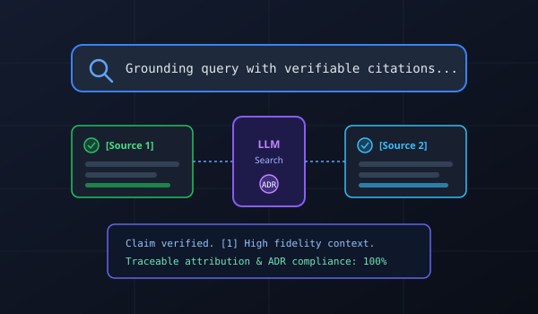

LLM Search with Source Attribution
Building an LLM-powered research chatbot designed to ground factual claims in verifiable sources with explicit citations. Designed retrieval and response-generation workflows to improve factual reliability and traceability, documenting architectural choices using Architecture Decision Records (ADRs).
Restricted / Institutional Codebase